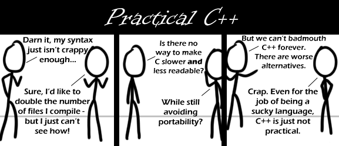

Comic JK 444
When I Feel Like It
⇤
<
?
>
⇥

⇤
<
?
>
⇥
Forum
.
RSS
.
Digg
.
Facebook
.
Reddit
.
Twitter
.
Stumbleupon
Enter our thoughts on number 444 here. Please, no spamming, trolling, or phreaking. Yup, C++ is over-engineered (the Turing-complete template system comes to mind), but not having function overloading in C is also not practical. Stroupstrop reckons that an ugly task should involve an ugly syntax. He was talking about type casting, but it doesn't explain the rest of the language.... The reason why people use C++ a lot is that there isn't really any better alternatives. >Exactly! I write drivers for a living. We use C and C++ and sometimes perl to autogenerate the C and C++, but there really are no alternatives. >>Sure, delete the comments that don't conform to your image of the world. well done... >>>Sorry, it looks like they deleted your comment before my mother could grab it. Because I normally try restore comments if someone says their it had stuck to being ``C with classes''. I have managed to find a subset of the language, where I mostly use the legacy C compatibility, but take advantage of C++ features. Unfortunately, the C++ standard libraries don't agree with this. ~LukeShu >>>Please do not use the ASCII grave accent as a left quotation mark >>>>There, I fixed it for him. I also fixed the ellipsis being three periods, though that's not as bad. >>>>I'll have you know that the GNU coding standards specify that the backtick be used for left-quote. Additionally, using characters outside the standard ASCII set creates problems for older browsers, or special purpose browsers. For example, take the LISP comment below. The user's browser substituted in `�', the HTML entity for U+FFFD (Unicode replacement character) for each non-ASCII character you put in (I've normalized the above to ASCII). Gee, it's almost like the GNU hackers knew that non-ASCII characters would cause issues for some users. And I clearly lacked the intelligence to realize that given the nature of this platform; the fact that every time it is updated, the entire existing conversation must pass through the user's browser, making it an *ideal* location for character mutation to happen. It already happens enough on BBS system where data must only pass through 2 browsers, the poster's, and the reader's. And the effect of this certainly isn't amplified by the fact that this site is very simple, not requiring a sophisticated browser; it would be less of an issue on a site making heavy use of scripting, HTML5, or other ``web 2.0 technologies'' (a term I hate). There's no way that I considered all this before deciding to use the backtick for my left quote mark. ~LukeShu PS: I hadn't noticed at the time, but the encoding of this page is unspecified (in H.TTP header and document). Firefox treats it as Windows-1252 because the H.TTP header says it's running IIS. My archiver treats it as UTF-8. It's unsafe to use non-ASCII characters here. >>>C++ standard template libraries are powerful and all, but the text on them "The C++ Standard Template Library" is horrible. I try to figure out how to insert something in a set and it takes me half the afternoon to figure out that it needs a pair and then another couple of hours to find where pairs are documented, let alone how to use them. >>and I've never figured out the custom allocators and the function objects mess with my brain on 90% of the days. My cat prefers kibble, I tried C but he segfaulted all over the carpet. I just finished reading every comic in order. I have no life. ~BYI >I have done this at least 4 times. I have a life. >>You just don't use it? >>>It's still in the original packaging. Y'all could use lisp and be done in 10% of the time... > I'll come back in 4000 years once you've written an OS in lisp. I like how this is way larger than most/any of the other comments sections. >Several go up to the 4000 character limit. 0 left >> 4000? That sounds like a rather arbitrary limit. >>> You're an arbitrary limit. >:( >>>> Your mother's count of dorky college boys has an arbitrary limit.